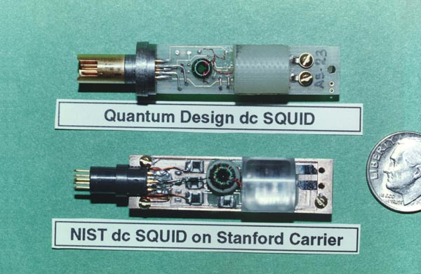

So far we have focused on how quantum computing could be used to improve smart city design. One topic we have overlooked is how the quantum computer will actually run our quantum circuits. In this challenge, you will explore how quantum hardware works, and gain some hands-on experience running quantum circuits on a real quantum computing.
To motivate these activities, you will take on the role of a smart city planner trying to convince stakeholders of the potential benefits offered by quantum computing. We will assume that this is taking place sometime in the future, when quantum computers are ready to tackle such large-scale problems. One of your stakeholders is skeptical that quantum computing even works, so you have decided to prepare a simple demonstration. Your goal in this challenge is to set up and perform one of the GHZ experiments which contributed to the 2022 Nobel Prize in physics. Throughout this challenge you will gain an introduction to quantum hardware, discover what a GHZ state is, and perform a GHZ experiment on the IBM Quantum Platform, as outlined below.
LINKS HERE
About the Image: This image depicts a superconducting quantum interference device (SQUID) prototype from Stanford University. The original image can be found here and is used under the public domain.